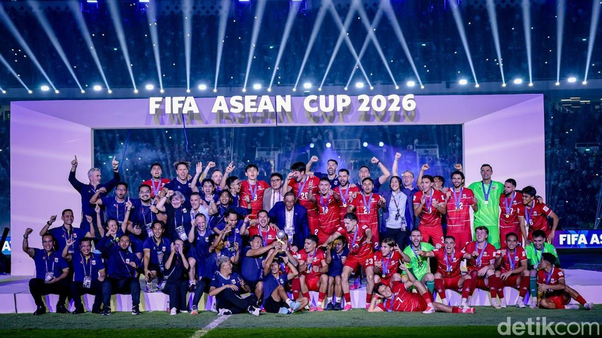

|
Website NazwaDimana ada Nazwa, hidupmu akan bewarna.
|
|
| Beranda | Tentang Saya | Kampusku | Syair Lagu | |
Timnas Indonesia Juara FIFA ASEAN Cup 2026Senin, 5 Oktober 2026 Timnas Indonesia berhasil mencetak sejarah dengan menjuarai FIFA ASEAN Cup 2026, setelah mengalahkan Thailand pada laga final yang berlangsung di Stadion Utama Gelora Bung Karno (SUGBK), Jakarta, Senin (5/10/2026). Indonesia menjadi juara pada edisi perdana turnamen tersebut. Pertandingan berlangsung dramatis. Indonesia sempat unggul melalui gol Dean James pada menit ke-84, tetapi Thailand berhasil menyamakan kedudukan tiga menit kemudian. Pada babak tambahan waktu, Thailand kembali unggul 2-1 sebelum Elkan Baggott mencetak gol penyama kedudukan pada menit ke-116. Skor 2-2 bertahan hingga akhir pertandingan.
 Pertandingan akhirnya ditentukan melalui adu penalti. Indonesia tampil tenang dan berhasil memenangkan drama tersebut dengan skor 4-2. Kevin Diks, Dean James, Elkan Baggott, dan Shayne Pattynama sukses menjalankan tugasnya, sementara kiper Emil Audero menjadi salah satu pahlawan setelah menggagalkan tendangan pemain Thailand. Gelar ini menjadi pencapaian bersejarah bagi sepak bola Indonesia karena merupakan trofi internasional pertama di luar medali emas SEA Games. Keberhasilan tersebut juga menjadi kebanggaan bagi masyarakat Indonesia sekaligus memberikan motivasi bagi skuad Garuda untuk menghadapi berbagai kompetisi internasional berikutnya. |
Tautan eksternal |
| © Copyright Nazwa Nabila Hafiz, 2026. | |